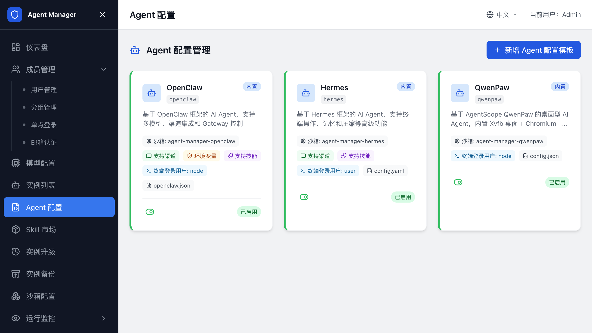
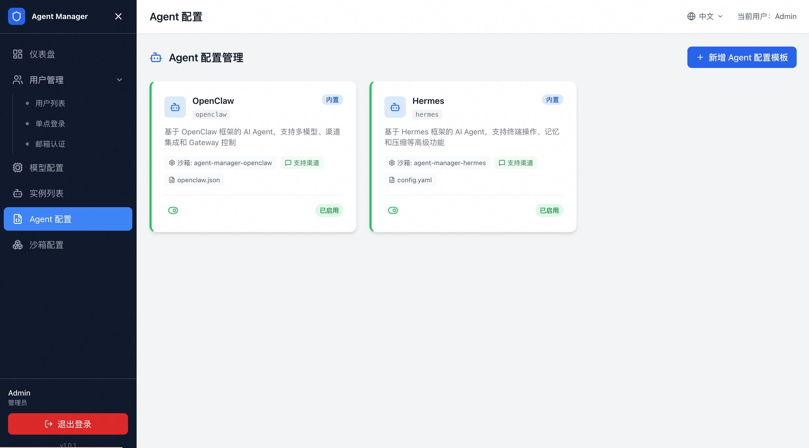

配置 Agent 类型¶
在 Agent 配置 中维护用户可选择的 Agent 类型、配置模板、自定义变量、渠道模板和备份升级命令。
SandboxSet 和沙箱镜像配置见 配置沙箱（SandboxSet）。

Agent 类型¶
用户创建实例时会先选择 Agent 类型。Agent 类型决定实例使用哪个配置模板、写入哪个配置文件、关联哪个 SandboxSet、用哪个用户启动，以及如何修改模型和渠道。
通过计算巢部署的新环境默认包含以下内置类型：
| 类型 | 代码 | 配置格式 | 关联 SandboxSet | 说明 |
|---|---|---|---|---|
| OpenClaw | openclaw |
JSON | agent-manager-openclaw |
基于 OpenClaw 框架的 AI Agent，内置多渠道集成能力。 |
| Hermes | hermes |
YAML | agent-manager-hermes |
Hermes Agent 运行环境。 |
不同版本可能包含更多内置类型，例如 QwenPaw。请以管理后台实际展示为准。
查看 Agent 配置¶
- 登录管理后台。
- 打开
Agent 配置。 - 在列表中选择目标 Agent 类型。
- 查看基本配置、配置模板、渠道模板和命令脚本。

内置类型通常可直接用于创建实例。需要调整内置类型时，先复制一份用于测试。
配置模板¶
配置模板用于生成每个实例的 Agent 配置文件。
模板支持占位符。用户创建实例或管理员保存配置时，系统会把模型、渠道和自定义变量写入模板。
常见占位符包括：
| 占位符 | 来源 |
|---|---|
${DASHSCOPE_API_KEY} |
百炼 API Key。 |
${AI_GATEWAY_DOMAIN} |
阿里云 AI 网关域名。 |
${CONSUMER_API_KEY} |
AI 网关为用户分配的消费者 Key。 |
${LITELLM_PROXY_URL} |
LiteLLM Proxy 地址。 |
${LITELLM_API_KEY} |
LiteLLM 为用户分配的 Key。 |
${CUSTOM_VAR} |
管理员定义的自定义变量。 |
新增模型提供商时，apiKeyPlaceholder 和 domainPlaceholder 必须与模板和命令脚本中的占位符名称完全一致。名称不一致会导致模型调用失败。
配置写入路径和沙箱用户¶
Agent 类型需要声明配置文件写入位置和沙箱用户。
常见示例：
| 类型 | 配置写入路径 | 沙箱用户 |
|---|---|---|
| OpenClaw | /home/node/.openclaw/openclaw.json |
node |
| Hermes | /opt/data/config.yaml |
以实际镜像配置为准 |
沙箱用户必须与 SandboxSet 镜像中的实际运行用户一致。用户不一致时，平台可能无法写入配置文件，实例会启动失败。
自定义变量¶
自定义变量用于把每个实例不同的业务参数传入 Agent，例如项目 Token、Webhook 地址、外部服务 API Key 或系统提示词。
在 Agent 配置的自定义变量区域定义字段。用户创建实例时，页面会按定义展示输入框。
字段说明¶
| 字段 | 说明 |
|---|---|
| 变量名 | 模板和命令脚本中引用的占位符名称。 |
| 显示标签 | 创建实例表单中展示给用户的字段名称。 |
| 类型 | 文本、密码或多行文本等。 |
| 必填 | 开启后，用户创建实例时必须填写。 |
| 默认值 | 可选，未填写时使用默认值。 |
| 说明 | 展示给用户的填写提示。 |
自定义变量仅在创建实例时填写。创建后暂不支持用户在实例详情页直接修改。
渠道模板¶
支持渠道的 Agent 类型维护渠道模板。渠道模板定义用户创建实例时需要填写的 IM 或会话接入参数，例如飞书、钉钉、企业微信、QQ 的应用 ID、密钥、Webhook 或 Token。
配置渠道模板时确认：
- 字段名和 Agent 配置模板中的占位符一致。
- 密钥类字段使用密码类型，避免在页面和日志中明文展示。
- 渠道模板只描述该 Agent 类型支持的渠道，不要把不同 Agent 类型的私有字段混用。
用户创建实例并选择渠道后，页面会按渠道模板展示填写表单，并把填写结果写入实例配置。
升级配置入口¶
Agent 类型详情页包含 备份&升级配置 标签页，用于保存升级前备份命令、升级后恢复命令和命令超时时间。
发起 Agent 升级时，平台会读取这些配置并应用到目标 Sandbox。
这部分配置只定义“如何在升级过程中备份和恢复该 Agent 类型的数据”。实例备份操作见 Agent 备份；实际选择 Sandbox、发起升级、查看历史和处理失败任务，见 Agent 升级。
新增 Agent 类型¶
新增 Agent 类型有两种方式：复制现有类型，或自定义创建。
从模板复制¶
- 打开
Agent 配置。 - 单击新增 Agent 类型。
- 选择从模板复制。
- 选择一个现有类型，例如 OpenClaw。
- 修改名称、代码、模板、命令或渠道配置。
- 保存。
这种方式适用于基于内置类型做少量调整。
自定义创建¶
- 准备 Agent 镜像。
- 准备 SandboxSet YAML。
- 在
沙箱配置中创建 SandboxSet。 - 在
Agent 配置中创建 Agent 类型。 - 关联对应 SandboxSet。
- 填写配置写入路径、沙箱用户和启动命令。
- 保存后创建测试实例验证。